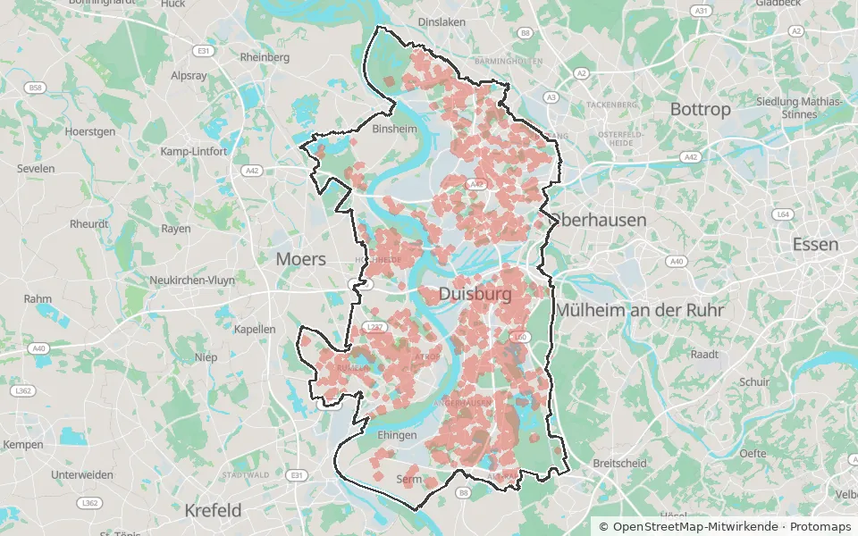
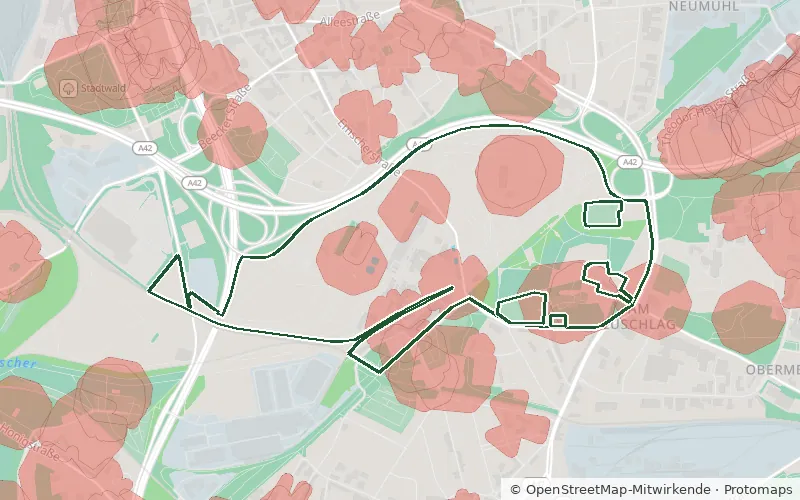
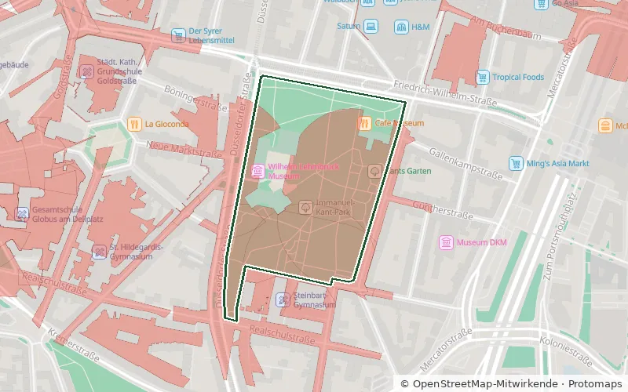
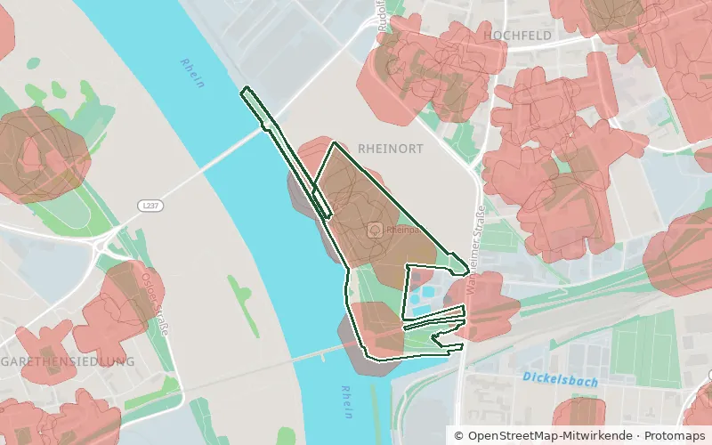
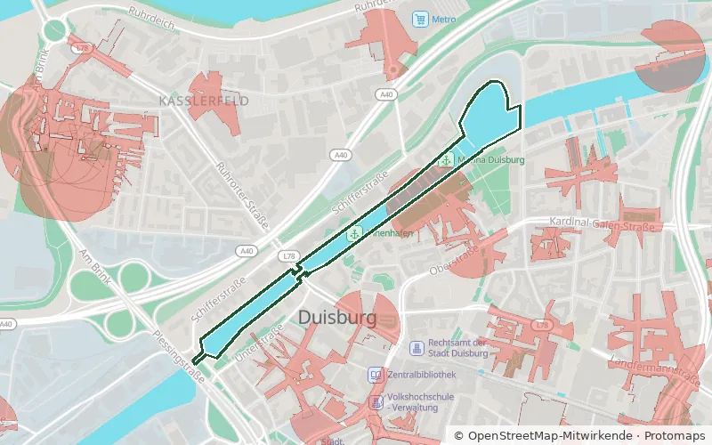
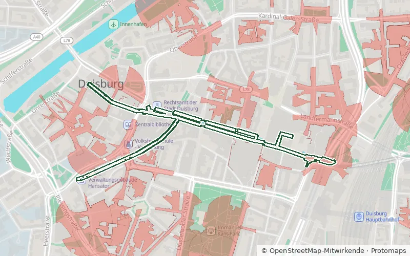
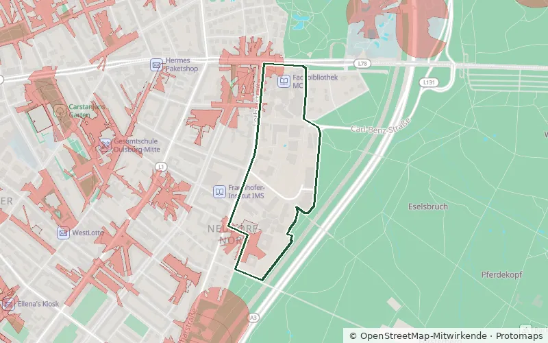

In Duisburg ist öffentliches Kiffen auf 34 km² verboten, das sind 14,8 % der Stadtfläche von 233 km². Grund sind 1 585 Einrichtungen, in deren Sichtweite nach § 5 KCanG nicht konsumiert werden darf, vor allem Sportstätten und Spielplätze. Sichtweite heißt: höchstens 100 Meter vom Eingangsbereich, und nur dort, wo kein Gebäude die Sicht verdeckt. Dazu kommen die Fußgängerzonen, in denen zwischen 7 und 20 Uhr nicht konsumiert werden darf, und überall die unmittelbare Gegenwart von Kindern und Jugendlichen.
Die Stadt hat eine eigene Karte der Verbotszonen veröffentlicht. Sie zieht einen Kreis von 100 Metern um einen Punkt je Einrichtung, hat den Stand September 2024 und zeigt keine Fußgängerzonen (Geoportal Duisburg).

Woher die Zonen kommen
| Einrichtung | Anzahl | Zonenfläche |
|---|---|---|
| Schulen | 157 | 8,0 km² |
| Kitas und Kindergärten | 147 | 4,2 km² |
| Kindertagespflege | 21 | 0,4 km² |
| Spielplätze | 466 | 9,9 km² |
| Kinder- und Jugendeinrichtungen | 35 | 0,8 km² |
| Sportstätten | 759 | 18,8 km² |
Die Spalte rechts zählt jede Art für sich; weil sich Zonen verschiedener Einrichtungen überlappen, ist ihre Summe größer als die 34 km² oben. Den größten Teil machen die 759 Sportstätten aus, von Bolzplätzen über Turnhallen bis zu Fitnessstudios, gefolgt von 466 Spielplätzen.
Auf Spiel- und Bolzplätzen verbietet die Sicherheits- und Ordnungsverordnung der Stadt außerdem, Alkohol „oder anderer Rauschmittel“ zu konsumieren, bis zu 1.000 Euro; Kinderspielplätze sind für Kinder bis 14 Jahre und nur bis zur Dunkelheit da, Bolzplätze bis 20 Uhr (Verordnung). Anbauvereinigungen fehlen in der Tabelle: Wo sie anbauen, ist nicht veröffentlicht.
Landschaftspark und Parks
Im Landschaftspark Duisburg-Nord liegen 27 % der Fläche in einer Zone, um fünf Spielplätze, drei Sportanlagen und die Jugendherberge im Park. Eine Regel zu Rauchen oder Cannabis haben die Besucherregeln nicht; der Park ist rund um die Uhr offen (Landschaftspark).

Im Kantpark am Lehmbruck-Museum sind es 71 %, im Rheinpark in Hochfeld 61 %: Dort liegen sieben Spielplätze, ein Basketballfeld, eine Kletterwand und ein Skatepark. Der Revierpark Mattlerbusch kommt auf 58 %, mit zehn Sportanlagen, das Erholungsgebiet am Toeppersee auf 25 %.


Am Innenhafen liegen 15 % in einer Zone. Am Rhein, an dessen Ufer viel Hafen und Industrie liegt, ist es kaum etwas: Auf einem 100 Meter breiten Streifen Land entlang des Flusses sind es 3 %. Ohne die Wälder im Süden gerechnet liegen 15,3 % der Stadt in einer Zone.

Innenstadt
Eine amtliche Liste der Duisburger Fußgängerzonen haben wir nicht gefunden. Die Verordnung der Stadt nennt als „fußläufige Bereiche“ der Innenstadt Königstraße, Düsseldorfer Straße, Tonhallenstraße, Sonnenwall, Münzstraße und Kuhtor (Verordnung, oben); Fußgängerbereiche nennt die Sondernutzungssatzung der Stadt auch in Hamborn, Meiderich und Rheinhausen. Dort gilt zwischen 7 und 20 Uhr Konsumverbot; blau zeigt die Karte die Fußgängerbereiche, wie sie in OpenStreetMap eingetragen sind.
Von Königstraße, Sonnenwall, Kuhstraße und Münzstraße liegen außerdem 14 % in einer Sichtweiten-Zone. Der König-Heinrich-Platz liegt fast außerhalb der Zonen (1 %), der Portsmouthplatz vor dem Hauptbahnhof zu 30 %. Im Bahnhof selbst verbietet die Hausordnung der Bahn, Cannabis zu rauchen (Hausordnung der Bahnhöfe).

Hochschule und Stadion
Hochschulen sind nach § 5 KCanG keine Verbotsorte. Vom Campus der Universität Duisburg-Essen an der Lotharstraße liegen 8 % in einer Zone. Im Stadion des MSV verbietet die Stadionordnung, Cannabis mitzuführen und zu konsumieren, auch auf dem Vorplatz und den Parkplätzen (Stadionordnung).

Was sonst noch gilt
Ein Verstoß gegen § 5 Abs. 2 kostet in Nordrhein-Westfalen 50 bis 500 Euro, in Gegenwart von Minderjährigen 300 bis 1.000 Euro (Land NRW); zuständig ist die Stadt. Für Volksfeste und ähnliche Großveranstaltungen sind die Veranstalter nach einem Erlass des Landes verpflichtet, Verstöße zu verhindern, notfalls mit einem generellen Konsumverbot (Erlass des Gesundheitsministeriums, Mai 2024). Der Weihnachtsmarkt liegt auf der Königstraße, also in der Fußgängerzone. Eigene Verbotszonen für Cannabis außer den Spiel- und Bolzplätzen hat Duisburg nicht (Stand 27. November 2026).
Häufige Fragen
Wo darf man in Duisburg kiffen?
Außerhalb der roten Flächen, außerhalb der Fußgängerzonen zwischen 7 und 20 Uhr, nicht auf Spiel- und Bolzplätzen, nicht in Gegenwart von Kindern und Jugendlichen und nicht dort, wo ein Hausrecht es verbietet. Eine weiße Fläche auf der Karte heißt nicht, dass Konsum dort erlaubt ist: Die Karte kennt weder Hecken noch Bäume, die die Sicht nehmen, noch Einrichtungen, die in OpenStreetMap fehlen.
Gibt es eine amtliche Karte?
Ja, die Stadt Duisburg hat eine veröffentlicht (Link oben). Sie misst von einem Punkt je Einrichtung aus statt vom Eingang, und Gebäude nehmen dort keine Sicht; diese Karte hier kann deshalb von ihr abweichen. Im Zweifel gilt, was vor Ort ausgeschildert ist.
Wie genau ist das?
Die Zonen sind aus OpenStreetMap berechnet, mit Gebäuden als Sichthindernis, und werden täglich neu gerechnet; die Zahlen auf dieser Seite sind vom 27. November 2026. Die Karte ist eine Orientierungshilfe, keine Rechtsauskunft. Wie gerechnet wird und wo die Grenzen liegen, steht auf der Über-Seite.
Fehlt eine Einrichtung oder ist eine falsch eingetragen? Korrekturen in OpenStreetMap erscheinen am Tag darauf auf der Karte; nur eintragen, was es vor Ort wirklich gibt.